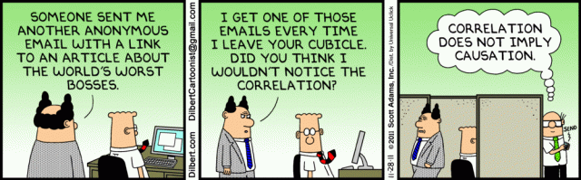

Inferência Causal
Introdução
ctrucios@unicamp.br
Instituto de Matemática, Estatística e Computação Científica (IMECC),
Universidade Estadual de Campinas (UNICAMP).
Introdução
Introdução
Introdução
Introdução
Introdução
Introdução

Correlação e causalidade podem co-existir, mas correlação não implica causalidade.
Introdução
Inferência Causal
O que é Inferência Causal?

- “Causal inference is the process of learning what would happen to the average outcome of a population if we were to introduce a change in the interventions that people actually receive.” Hernán, M. A., & Robins, J. M. (2020) - “Causal Inference: What If”
- “Causal inference is the process of going beyond the observed data and proposing explanations for events that are suspected to have been caused by active interventions that modify the course of natural events.” Pearl, J. (2009) - “Causality: Models, Reasoning, and Inference”
O que é Inferência Causal?
- “Causal inference is the process of drawing conclusions about the effect of one variable by manipulating another variable, either through experimental or statistical observation.” Morgan, S. L., & Winship, C. (2014) - “Counterfactuals and Causal Inference: Methods and Principles for Social Research”
- “Causal inference is the process of making claims about the causal effects of treatments, interventions, or exposures, based on observational or experimental data.” Rubin, D. B. (2005) - “Causal Inference Using Potential Outcomes: Design, Modeling, Decisions”
O que é Inferência Causal?
- “Causal inference is the process of learning about the effects of interventions, policies, or treatments, using observational or experimental data and appropriate statistical methods.” Imbens, G. W., & Rubin, D. B. (2015) - “Causal Inference for Statistics, Social, and Biomedical Sciences”
- “Causal inference is the attempt to draw conclusions about ‘what would have happened’ if a variable of interest had been different in an experimental group, compared to a control group, while holding other variables constant.” Angrist, J. D., & Pischke, J. S. (2008) - “Mostly Harmless Econometrics: An Empiricist’s Companion”
Inferência causal
Paradoxo de Simpson
Paradoxo de Simpson
Paradoxo de Yule-Simpson
Exemplo 1
As taxas de recuperação (1: recuperado, 0: não recuperado) de um estudo aplicado em 700 pacientes que tiveram acesso a um novo medicamento são apresentadas a seguir. Dos 700 pacientes, apenas 350 decidiram experimentar o novo medicamento. Baseado nos resultados, recomendaria ou não o uso do novo medicamento?
| Novo medicamento | Não novo medicamento | |
|---|---|---|
| Total | 273/350 (78%) | 289/350 (83%) |
Seu colega, em lugar de olhar os resutados agregados, resolve olhar os resultados por gênero, obtendo o seguinte resultado:
| Novo medicamento | Não novo medicamento | |
|---|---|---|
| Homem | 81/87 (93%) | 234/270 (87%) |
| Mulher | 192/263 (73%) | 55/80 (69%) |
Ainda manteria suas conclusões?
Paradoxo de Yule-Simpson
Suponha agora que conhecemos um fato adicional: Estrogêneo tem um efeito negativo na recuperação.
- Assim, mulheres se recuperam com uma taxa menor do que os homens, independente se experimentaram ou não o novo medicamento.
- Note também que mulheres são mais propensas a experimentar o novo medicamento do que os homens.
- Isto explicaria o fato pelo qual o novo medicamento parece ser prejudicial quando olhamos para os dados agregados. Afinal, se selecionarmos uma pessoa aleatoriamente entre aqueles que experimentaram o novo medicamento, é mais provavel que seja uma mulher e, consequentemente, seja menos propensa a se recuperar do que uma pessoa escolhida ao acaso entre aqueles que não experimentaram o novo medicamento.
Paradoxo de Yule-Simpson
- Assim, para avaliar a efetividade do novo medicamento precisamos comparar pessoas do mesmo gênero, garantindo assim que as diferenças nas taxas de recuperação sejam apenas por causa do medicamento e não por causa do “efeito estrogêneo”. Ou seja, neste caso devemos olhar para os dados desagregados.
Paradoxo de Yule-Simpson
Exemplo 2
Considere um estudo que mede a quantidade média de exercícios diário (em minutos) e o nível de colesterol LDL (mg/dL). Baseado no seguinte gráfico de dispersão, quais seriam suas conclusões?
Paradoxo de Yule-Simpson
Exemplo 2
Você, incomodado com o resultado contraintuitivo, revolve incluir a variável grupo, obtendo o seguinte resultado
Suas conclusões permaneceriam as mesmas?
Paradoxo de Yule-Simpson
- Se olharmos para o gráfico agregado, teremos uma correlação positiva entre a quantidade média (em minutos) de exercício diário com o nível de colesterol LDL.
- Se olharmos para o gráfico mas considerando os diferentes grupos, vemos que existe uma correlação negativa (dentro de cada grupo) entre a quantidade média (em minutos) de exercício diário com o nível de colesterol LDL. Ademais, note que em geral, quanto mais jovem a pessoa, menor é seu nível de colesterol.
- Se soubermos que, enquanto a pessoa é mais velha, é mais plausível que faça exercícios e também que tenha colesterol alto, então podemos explicar os resultados.
- Idade é uma causa comum de ambos, tratamento (exercício) e resposta (colesterol). Assim, devemos olhar para os dados desagregados e comparar pessoas do mesmo grupo etário.
Paradoxo de Yule-Simpson
Exemplo 3
Pense em um contexto semelhando ao do Exemplo 1 (novo medicamento). Contudo, em lugar de termos informação sobre o gênero dos pacientes, temos informação sobre a pressão arterial destes, a mesma que foi coletada ao final do experimento. Os resultados obtidos são os seguintes
| Não novo medicamento | Novo medicamento | |
|---|---|---|
| Baixa Pressão | 81/87 (93%) | 234/270 (87%) |
| Alta Pressão | 192/263 (73%) | 55/80 (69%) |
| Total | 273/350 (78%) | 289/350 (83%) |
Quais são as suas conclusões? recomendaria ou não o novo medicamento?
Paradoxo de Yule-Simpson
- Depois de estudar o problema, você descobre que o novo medicamento ajuda na recuperação, entre outras coisas, justamente por baixar o nível de pressão arterial.
- Nos dados agregados, o novo medicamento melhora as taxas de recuperação justamente pelo efeito que tem diminuindo a pressão arterial.
- Neste caso, a baixa pressão medida no final do experimento é, de fato, um dos mecanismos em que o tratamento (novo medicamento) afeta na recuperação. Assim, não faz sentido separar os resultados baseados na pressão arterial. Devemos olhar então os resultados agregados
Paradoxo de Yule-Simpson
Exemplo 4 [Pedras no rim - Charig et al. (1986)]
Dados de 700 pacientes com pedras no rim foram coletados. Seja \(Z\) o tratameno (1: procedimento cirúrgico invasivo, 0: procedimento menor) e seja \(Y\) o resultado (1: sucesso, 0: fracasso). A Tabela de continguência é apresentada a seguir:
| \(Y = 1\) | \(Y = 0\) | |
|---|---|---|
| \(Z = 1\) | 273 | 77 |
| \(Z = 0\) | 289 | 61 |
Paradoxo de Yule-Simpson
Important
Seja a distribuição conjunta de \(Z\) e \(Y\) (ambas binárias)
| \(Y = 1\) | \(Y = 0\) | |
|---|---|---|
| \(Z = 1\) | \(p_{11}\) | \(p_{10}\) |
| \(Z = 0\) | \(p_{01}\) | \(p_{00}\) |
em que \(p_{zy} = P(Z = z, Y = y)\). Então
\[{\rm RD} \text{ (risk difference)} = P(Y = 1 | Z = 1) - P(Y = 1 | Z = 0) = \dfrac{p_{11}}{p_{11} + p_{10}} - \dfrac{p_{01}}{p_{01} + p_{00}}.\]
\[{\rm RR} \text{ (risk ratio)}= \dfrac{P(Y = 1 | Z = 1)}{P(Y = 1 | Z = 0)} = \dfrac{p_{11}}{p_{11} + p_{10}} \Big / \dfrac{p_{01}}{p_{01} + p_{00}}.\] \[{\rm OR} \text{ (odds ratio)} = \dfrac{P(Y = 1 | Z = 1) \big / P(Y = 0 | Z = 1)}{P(Y = 1 | Z = 0) \big / P(Y = 0 | Z = 0)} = \dfrac{\dfrac{p_{11}}{p_{11} + p_{10}} \Big / \dfrac{p_{10}}{p_{11} + p_{10}}}{\dfrac{p_{01}}{p_{01} + p_{00}} \Big / \dfrac{p_{00}}{p_{01} + p_{00}}} = \dfrac{p_{11}p_{00}}{p_{10}p_{01}}.\]
Paradoxo de Yule-Simpson
Important
Se resumimos os dados observados em uma Tabela de contingência
| \(Y = 1\) | \(Y = 0\) | |
|---|---|---|
| \(Z = 1\) | \(n_{11}\) | \(n_{10}\) |
| \(Z = 0\) | \(n_{01}\) | \(n_{00}\) |
em que \(n_{zy} = \# \{i: Z_i = z, Y_i = y \}\). Podemos estimar RD, RR e OR, substituindo \(p_{zy}\) por \(\hat{p}_{zy} = n_{zy}/n\) com \(n\) sendo o total de observações.
Paradoxo de Yule-Simpson
Exemplo 4 [Pedras no rim - Charig et al. (1986)]
| \(Y = 1\) | \(Y = 0\) | |
|---|---|---|
| \(Z = 1\) | 273 | 77 |
| \(Z = 0\) | 289 | 61 |
\[{\rm \widehat{RD}} = \dfrac{n_{11}}{n_{11} + n_{10}} - \dfrac{n_{01}}{n_{01} + n_{00}} = \dfrac{273}{273 + 77} - \dfrac{289}{289 + 61} \approx -0.05 (-5\% < 0)\]
- O tratamento 0 parece melhor, ou seja, procedimentos menores levam a uma maior quantidade de sucessos comparados com procedimentos cirúrgicos invasivos.
- Contudo, os dados não vem de um RCT (randomized controlled trial). Isso implica que pacientes recebendo o tratamento 1 podem ser bem diferentes do que pacientes recebendo o tratamento 0.
- Na prática, alguns pacientes tem casos mais graves (pedras maiores) do que outros.
Paradoxo de Yule-Simpson
Exemplo 4 [Pedras no rim - Charig et al. (1986)]
Casos leves (pedras pequenas)
| \(Y = 1\) | \(Y = 0\) | |
|---|---|---|
| \(Z = 1\) | 81 | 6 |
| \(Z = 0\) | 234 | 36 |
Casos graves (pedras grandes)
| \(Y = 1\) | \(Y = 0\) | |
|---|---|---|
| \(Z = 1\) | 192 | 71 |
| \(Z = 0\) | 55 | 25 |
\[{\rm \widehat{RD}_{leves}} = \dfrac{81}{81 + 6} - \dfrac{234}{234+35} \approx 0.06\]
\[{\rm \widehat{RD}_{graves}} = \dfrac{192}{192 + 71} - \dfrac{55}{55+25} \approx 0.04\]
- Para os casos leves, o tratamento 1 é melhor.
- Para os casos graves, o tratamento 1 é melhor.
Consideremos \(X\) uma variável binária (1: caso leve, 0: caso grave).
Paradoxo de Yule-Simpson
Será que, dependendo do caso (\(X = 1\) ou \(0\)), pacientes preferem algum tipo de tratamento?
\[\begin{align*} & \hat{P}(Z = 1 | X = 1) - \hat{P}(Z = 1 | X = 0) \\ & = \dfrac{81 + 6}{81 + 6 + 234 + 36} - \dfrac{192 + 71}{ 192 + 71 + 55 + 25} \\ & \approx -0.52 \end{align*}\]
\[\begin{align*} & \hat{P}(Z = 0 | X = 1) - \hat{P}(Z = 0 | X = 0) \\ & = \dfrac{234 + 36}{81 + 6 + 234 + 36} - \dfrac{55 + 25}{ 192 + 71 + 55 + 25} \\ & \approx 0.52 \end{align*}\]
Pacientes com casos graves (\(X = 0\)) tendem a tomar o tratamento 1 (\(Z = 1\)) com mais frequência. Já pacientes com casos leves (\(X = 1\)) tendem a tomar o tratamento 0 (\(Z = 0\)) com mais frequência.
Paradoxo de Yule-Simpson
\[\begin{align*} & \hat{P}(Y = 1 | Z = 1, X = 1) - \hat{P}(Y = 1 | Z = 1, X = 0) \\ & = \dfrac{81}{81 + 6} - \dfrac{192}{192 + 71} \\ & \approx 0.20 \end{align*}\]
\[\begin{align*} & \hat{P}(Y = 1 | Z = 0, X = 1) - \hat{P}(Y = 1 | Z = 0, X = 0) \\ & = \dfrac{234}{234 + 36} - \dfrac{55}{55 + 25} \\ & \approx 0.18 \end{align*}\]
Independente do tratamento (\(Z\)), paciêntes com casos leves (\(X = 1\)) tem maiores probabilidades de sucesso do que pacientes com casos graves (\(X = 0\)).
Paradoxo de Yule-Simpson
Se aplicarmos o tratamento menos efetivo (\(Z = 0\)) de forma mais frequente para os casos mais leves (\(X = 1\)) pode parecer que o tratamento é mais efetivo. Assim, para eliminar o efeito “severidade do caso”, devemos olhar para os dados desagregados (por severidade do caso).
Observação:
Repare que o último exemplo podería ter sido apresentado de forma semelhante aos primeiros, em que era reportada a taxa de sucesso (\(Y = 1\)).
| \(Z = 1\) | \(Z = 0\) | |
|---|---|---|
| \(X = 1\) | 81 / (81 + 6) (93%) | 234 / (234 + 36) (87%) |
| \(X = 0\) | 192 / (192 + 71) (73%) | 55 / (55 + 25) (69%) |
| Total | 273 / 350 (77%) | 289 / 350 (83%) |
Paradoxo de Yule-Simpson
Definições básicas
Definições básicas
Exemplo 5
Juan e Maria são pacientes esperando por um transplate de coração. Em janeiro 1, Juan e Maria recebem o transplante:
- Cinco dias depois, Juan morre.
- O que diria acerca do efeito do transplante de coração na morte de Juan?
- Cinco dias depois, Maria continua com vida.
- Diria o mesmo no caso da Maria do que no caso do Juan?
Imagine que, de alguma forma (provisão divina), sabemos que:
- Se Juan não tivesse recebido o transplante, ainda estaria vivo.
- Se Maria não tivesse recebido o transplante, também ainda estaria viva.
- Como seriam suas conclusões agora?
Definições básicas
Usualmente, comparamos o resultado quando uma determinada ação A é realizada versus o resultado quando a ação A não é realizada. Se o resultado muda, dizemos que a ação A tem um efeito causal sobre o resultado. Caso contrario, dizemos que ação A não tem um efeito causal sobre o resultado. A ação A é geralmente chamada de intervenção, política ou tratamento.
Definições básicas
- Considere um estudo com \(n\) unidades experimentais (\(i = 1, \cdots, n\)).
- Considere também uma intervenção A com dois níveis (1: tratamento, 0: controle).
- Para cada unidade experimental \(i\), o resultado de interesse, \(Y_i\), tem dois versões \[Y_i(1) \quad e \quad Y_i(0),\] sob as intervenções 1 (tratamento) e 0 (controle), respectivamente.
- No nosso exemplo temos:
- Juan tem \(Y(1) = 1\) e \(Y(0) = 0\).
- Maria tem \(Y(1) = 0\) e \(Y(0) = 0\)
Definições básicas
Definição: efeito causal individual
A intervenção A tem um efeito causal no resultado do \(i\)-éssimo individuo se \[Y_i(1) \neq Y_i(0).\]
\(Y_i(1)\) e \(Y_i(0)\) são conhecidas como potential outcomes ou counterfactual outcomes para a \(i\)-éssima unidade. Aquela que corresponde ao valor da intervenção que o indivíduo de fato recebeu é chamada de factual e a outra de contrafactual.
Definições básicas
- Identificarmos efeitos causais individuais não é geralmente possível (Por quê?).
- Assim, devemos olhar para o efeito causal médio (average causal effect) chamado também de average treatment effect (ATE).
Definição: efeito causal médio
O efeito causal médio da intervenção A sob o resultado \(Y\) esta presente se \[\mathbb{E}[Y(1)] \neq \mathbb{E}[Y(0)].\]
Definições básicas
Exemplo 6
Pensemos na familia do Juan como nossa população de interesse e vejamos os resultados contrafactuais sobre as intervenções \(a = 1\) e \(a = 0\)
| Y(0) | Y(1) | |
|---|---|---|
| Carlos | 0 | 1 |
| Daniela | 1 | 0 |
| Luiz | 0 | 0 |
| Maria | 0 | 0 |
| Roberto | 0 | 0 |
| Rosa | 1 | 0 |
| Eric | 0 | 0 |
| Manuella | 0 | 1 |
| Julio | 1 | 1 |
| Laura | 1 | 0 |
| Cezar | 0 | 1 |
| Guilherme | 1 | 1 |
| Sandra | 1 | 1 |
| Monica | 0 | 1 |
| Ana | 0 | 1 |
| Augusto | 0 | 1 |
| Wanderlei | 1 | 1 |
| Sheila | 1 | 0 |
| Alex | 1 | 0 |
| Tatiane | 1 | 0 |
- Em quais casos existe um efeito causal individual?
- Quantos elementos da população teriam morto se tivessem recebido o transplante (\(Y(1) = 1\))?
- 50%
- Quantos elementos da população teriam morto se não tivessem recebido o transplante (\(Y(0) = 1\))?
- 50%
- O transplante teve ou não teve um efeito causal médio?
Definições básicas
O efeito causal médio é comumente chamado apenas de efeito causal e a hipótese nula de não efeito médio causal é chamada simplesmente de hipótese causal nula.
Se o resultado de interesse for dicotomico, a ausência do efeito causal médio também pode ser medido através de:
- \(Pr(Y(1) = 1) - Pr(Y(0) = 1) = 0\)
- \(\dfrac{Pr(Y(1) = 1)}{Pr(Y(0) = 1)} = 1\)
- \(\dfrac{Pr(Y(1) = 1) \big / Pr(Y(1) = 0)}{Pr(Y(0) = 1) \big / Pr(Y(0) = 0)} = 1\)
Em que \(Pr(\cdot)\) é a proporção de individuos na população.
Definições básicas
- Na prática, nunca temos temos a Tabela como no exemplo da familia do Juan (ou observamos \(Y(1)\) ou observamos \(Y(0)\), nunca ambos).
- Na prática, observamos qual foi a intervenção A (1 ou 0) e o resultado observado (\(Y\)).
| A | 0 | 0 | 0 | 0 | 1 | 1 | 1 | 1 | 0 | 0 | 0 | 1 | 1 | 1 | 1 | 1 | 1 | 1 | 1 | 1 |
| Y | 0 | 1 | 0 | 0 | 0 | 0 | 0 | 1 | 1 | 1 | 0 | 1 | 1 | 1 | 1 | 1 | 1 | 0 | 0 | 0 |
Quando a proporção de indivíduos que \(Y = 1\) no grupo de tratamento e no de controle são iguais, ou seja, \[Pr(Y = 1 | A = 1) = Pr(Y = 1 | A = 0),\] dizemos que \(A\) e \(Y\) são independentes (\(A \perp\!\!\!\perp Y\)), não associados ou que A não predize \(Y\). Caso contrário dizemos que \(A\) e \(Y\) são dependentes ou associadas.
Definições básicas
Outras definições equivalentes:
- \(Pr(Y = 1 | A = 1) - Pr(Y = 1 | A = 0) = 0\)
- \(\dfrac{Pr(Y = 1 | A = 1)}{Pr(Y = 1 | A = 0)} = 1\)
- \(\dfrac{Pr(Y = 1 | A = 1) \big / Pr(Y = 0| A = 1)}{Pr(Y = 1 | A = 0) \big / Pr(Y = 0| A = 0)} = 1\)
Se \(Y\) for contínua, definimos a independência média entre \(A\) e \(Y\) como \[\mathbb{E}(Y | A = 1) = \mathbb{E}(Y | A = 0)\]
Definições básicas
Voltando a exemplo, são \(A\) e \(Y\) associados?
| A | 0 | 0 | 0 | 0 | 1 | 1 | 1 | 1 | 0 | 0 | 0 | 1 | 1 | 1 | 1 | 1 | 1 | 1 | 1 | 1 |
| Y | 0 | 1 | 0 | 0 | 0 | 0 | 0 | 1 | 1 | 1 | 0 | 1 | 1 | 1 | 1 | 1 | 1 | 0 | 0 | 0 |
Sim, pois
\[P(Y = 1 | A = 1) = 7/13 \neq P(Y = 1 | A = 0) = 3/7\]
Causalidade ou associação
Causalidade ou associação
Causalidade ou associação
Causalidade
- A definição de causalidade implica contrastar o quadrado branco vs. o quadrado cinza.
- Inferências sobre causalidade preocupam-se com perguntas “e se” no mundo contrafactual.
- Definida como a diferença de risco na mesma população sobre diferentes valores de tratamento (\(a = 1\) ou \(a = 0\)).
Associação
- A definição de associação implica contrastar a parte do quadrado que é branco vs. a parte cinza.
- Inferências sobre associação preocupam-se com perguntas no mundo real
- Definida como a diferença de risco em dois subconjuntos distintos (determinados pelo valor do tratamento \(A = 1\) ou \(A = 0\)).
Referências
- Peng Ding (2023). A First Course in Causal Inference. Capítulo 1.
- Peng Ding (2023). A First Course in Causal Inference. Capítulo 2.
- Hernán, Miguel A. e Robins, James, M. (2023). Causal Inference: What if?. Captítulo 1.
- Rubin, D. B. (2005). Causal inference using potential outcomes: Design, modeling, decisions. Journal of the American Statistical Association, 100(469), 322-331. [Leitura recomendada]

Carlos Trucíos (IMECC/UNICAMP) | ME920/MI628 - Inferência Causal | ctruciosm.github.io